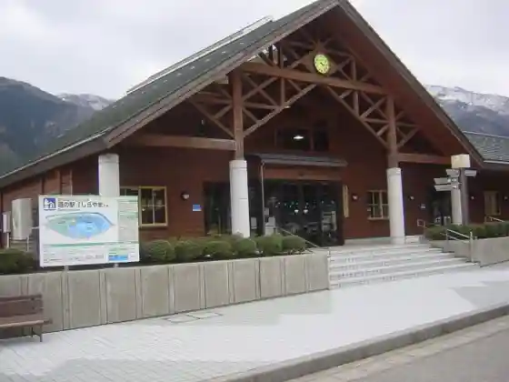
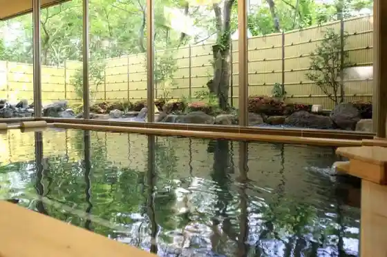
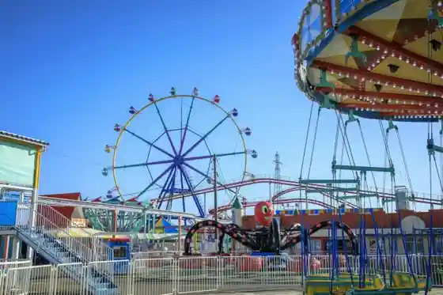

Roadside Station Shirayamasan
Nomi, Ishikawa · 076-273-4851 · Official / source link

Tatsukuchi Onsen Soyu Satoyama Baths
Nomi, Ishikawa · 0761-51-2183 · Official / source link

Ishikawa Zoo
Nomi, Ishikawa · 0761-51-8500 · Official / source link
Tedori Fisshu Land
Nomi, Ishikawa · 0761-57-2211 · Official / source link

Nomi Negami Suigaoka Ikoi no Plaza
Nomi, Ishikawa · 0761-55-2896 · Official / source link
Tatsukuchi Kyuryo Park
Nomi, Ishikawa · 0761-51-4166 · Official / source link
Kutani Togei Village
Nomi, Ishikawa · 0761-58-6102 · Official / source link
Kani Fuchi
Nomi, Ishikawa · 0761-52-8050 · Official / source link
Nomi Monomi Yama Sports Park
Nomi, Ishikawa · 0761-51-6460 · Official / source link
Adobencha Garden Nomi
Nomi, Ishikawa · 0761-58-0923 · Official / source link
Matsui Hideki Besuboru Museum
Nomi, Ishikawa · 0761-22-2447 · Official / source link
Nomi Furusato Museum
Nomi, Ishikawa · 0761-58-5250 · Official / source link
Kutani Yaki Urutoramanshiriizu Etsuke Ke Experience
Nomi, Ishikawa · 0761-58-6300 · Official / source link
Nanatsu Taki
Nomi, Ishikawa · 0761-51-2308 · Official / source link
Nomi Bosai Center
Nomi, Ishikawa · 0761-58-6600 · Official / source link
Yarimizu Kannon Reisui Do
Nomi, Ishikawa · Official / source link
Kyu Rikukaigun Gunso Tenjikan
Nomi, Ishikawa · 0761-51-2007 · Official / source link
Kannon Yama Haikingukosu
Nomi, Ishikawa · 0761-51-2308 · Official / source link
Nomi Negami Fureai Puru
Nomi, Ishikawa · 0761-55-4746 · Official / source link
Miyamoto Shuzo Mise
Nomi, Ishikawa · 0761-51-3333 · Official / source link
Tatsukuchi Ho Ranch
Nomi, Ishikawa · 0761-51-2411 · Official / source link
KAM Nomi Kutani Yaki Art Museum | Taiken Kan |
Nomi, Ishikawa · 0761-58-6300 · Official / source link
Wadayama Matsuji Yama Shiseki Park
Nomi, Ishikawa · 0761-58-5250 · Official / source link
Aki Jozan Shiseki Park
Nomi, Ishikawa · 0761-58-5250 · Official / source link
Nomi Tatsukuchi Onsen Ashiyu
Nomi, Ishikawa · 0761-58-2251 · Official / source link
Sano Kutani Toso Shrine
Nomi, Ishikawa · Official / source link
Kenko Rodo (Kyu Hokurikutetsudo Nomi Senzoi Sen)
Nomi, Ishikawa · Official / source link
KAM Nomi Kutani Yaki Art Museum | Gosai Kan |
Nomi, Ishikawa · 0761-58-6100 · Official / source link
Ishikawa Saiensu Park
Nomi, Ishikawa · 0761-51-0122 · Official / source link
Komatsu Matere
Nomi, Ishikawa · Official / source link
Shu Fuku Tera
Nomi, Ishikawa · 0761-51-3623 · Official / source link
Negami Matsu Genpei Kosenjo Ato
Nomi, Ishikawa · Official / source link
Negami Gakushu Center
Nomi, Ishikawa · 0761-55-8560 · Official / source link
Nomi Izumi Dai Park
Nomi, Ishikawa · 0761-58-2252 · Official / source link
Nomi Terai Rojin Fukushi Center (Kame Rei So)
Nomi, Ishikawa · 0761-57-2323 · Official / source link
no Miden Plaza
Nomi, Ishikawa · 0761-52-8050 · Official / source link
Kokuzo Yama Castle Ruins
Nomi, Ishikawa · 0761-51-2308 · Official / source link
KAM Nomi Kutani Yaki Art Museum | Asazo Goju Kichi Memorial Museum |
Nomi, Ishikawa · 0761-58-6789 · Official / source link
Nomi Burial Mound Gun
Nomi, Ishikawa · 0761-52-8050 · Official / source link
Ishikawaken Kutani Tojiki Shokogyo Kyodokumiai Rengokai
Nomi, Ishikawa · 0761-57-0125 · Official / source link
JA Negami Seikatsu Shizai Kan
Nomi, Ishikawa · 0761-55-5813 · Official / source link
Nomi Village Yama Gaidohaiku
Nomi, Ishikawa · 0761-51-2308 · Official / source link
Yoshimitsu no Ichiri Tsuka
Nomi, Ishikawa · 0761-52-8050 · Official / source link